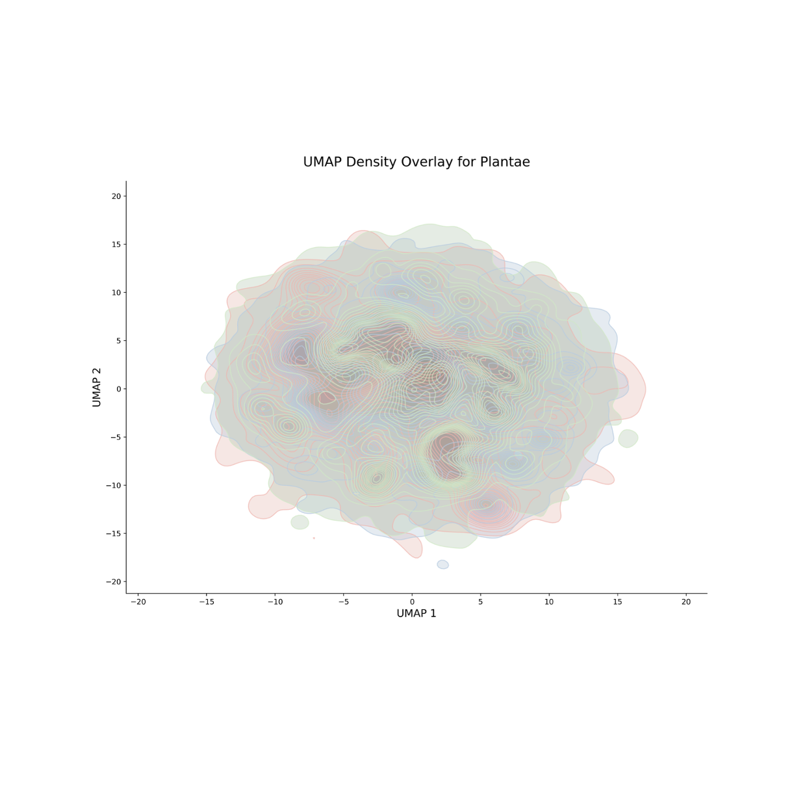
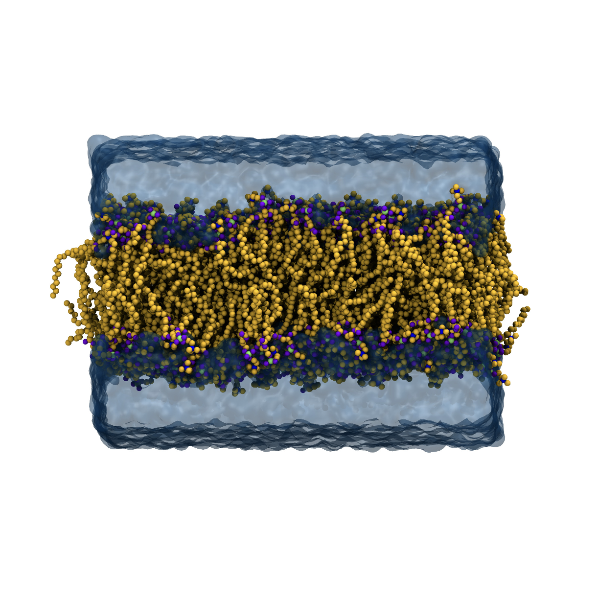
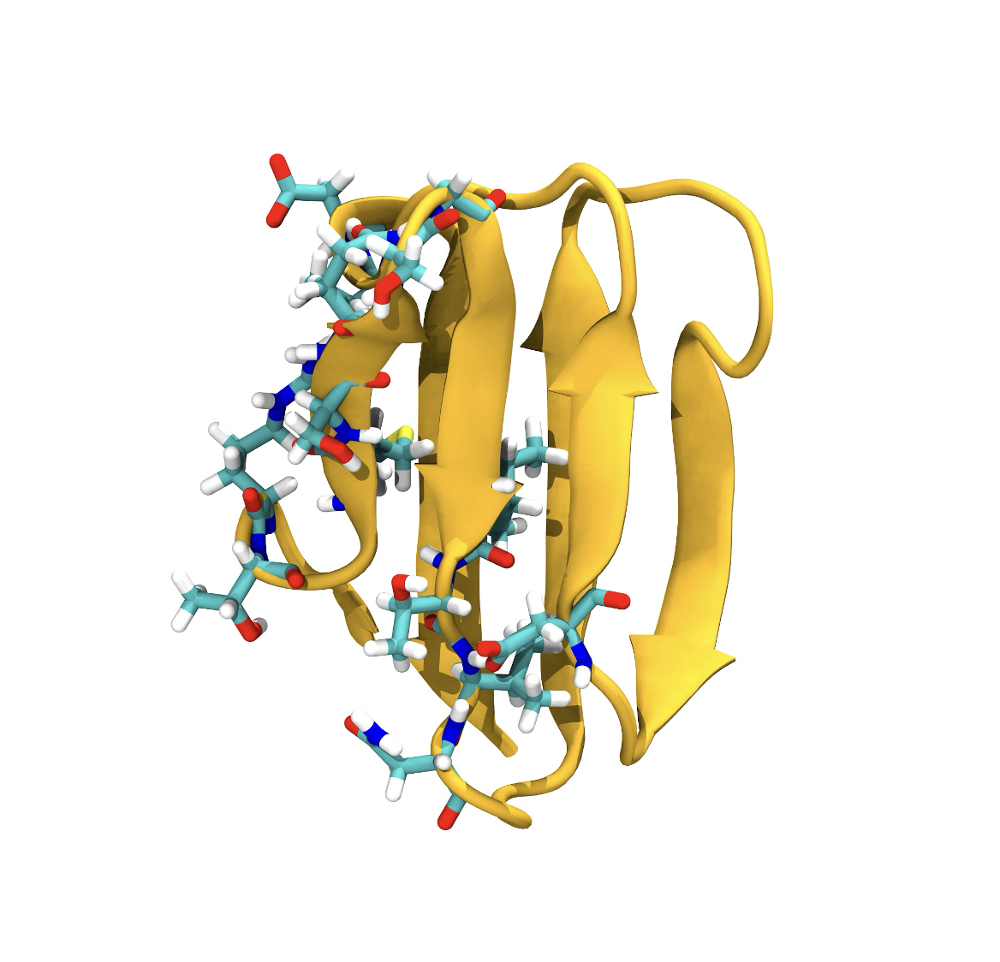
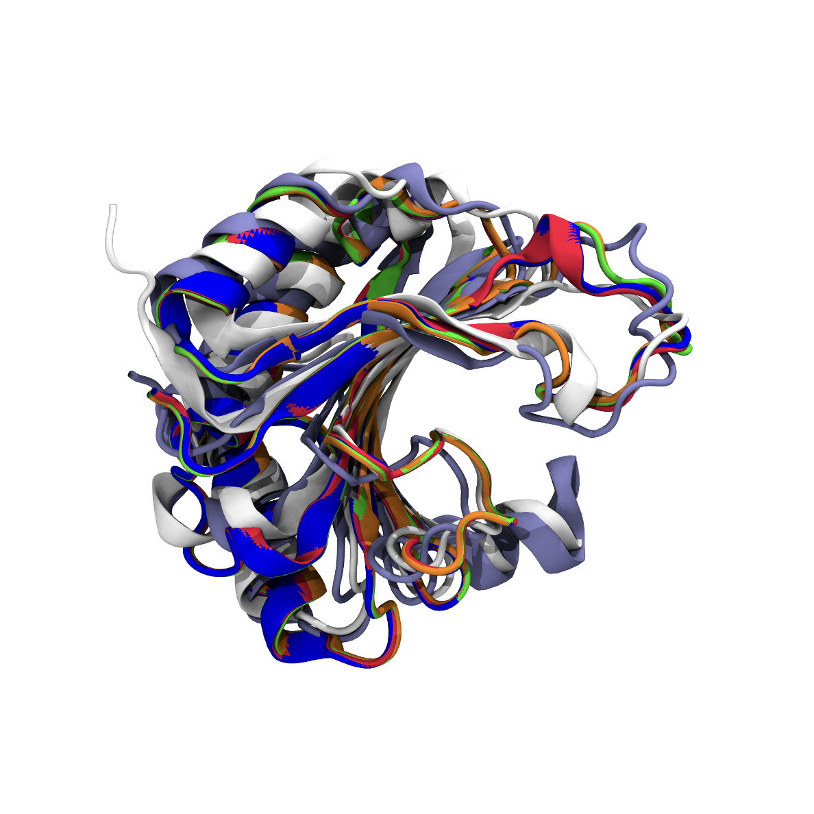
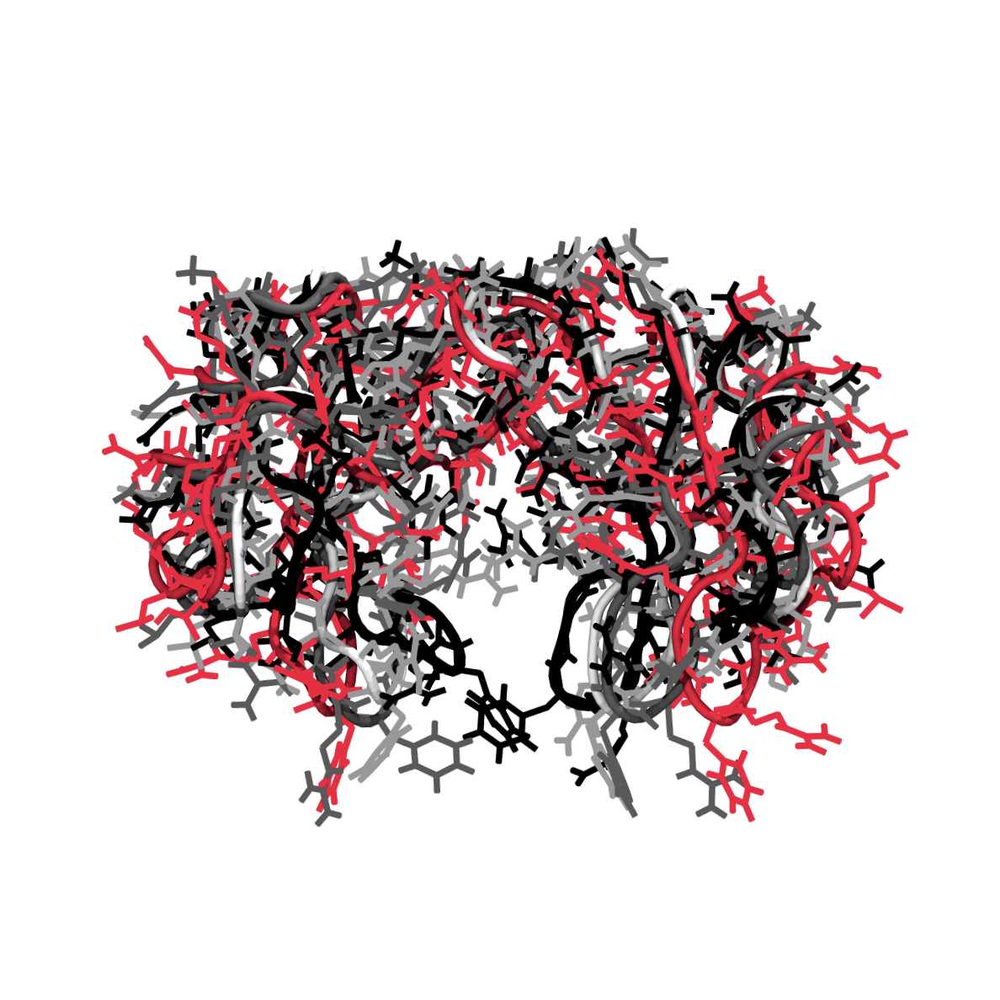
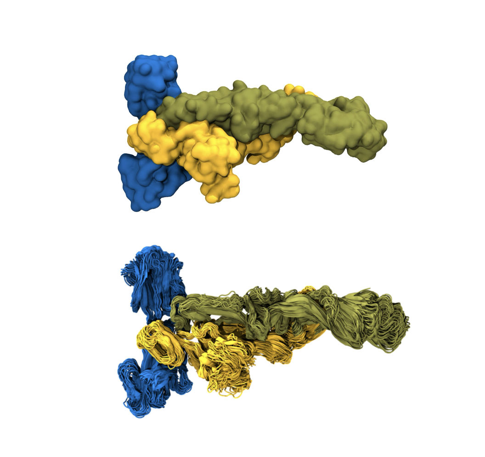

About
As a PhD student in Bioinformatics I work on software engineering, machine learning, omics, structural biology and chemoinformatics. My research applies deep learning, focusing on generative models, to develop an antimicrobial language that generates synthetic compounds inspired by the immune systems of diverse organisms. The goal is actionable routes to new therapeutics against antimicrobial resistance using scalable in silico methods.
I am a Nextflow Ambassador, a specialist in data science and analytics and an MBA student in software engineering, which grounds the research work in reproducible workflows, data governance and software architecture.
During my MSc in Genetics and Molecular Biology I developed AMPidentifier, a machine learning tool that identifies antimicrobial sequences in genomic and proteomic data. My BSc is in Biomedical Sciences, with a concentration in bioinformatics and clinical pathology.
Skills
6 groupsExperience
9 rolesEducation
5 degreesCertifications
13 itemsPublications
7 papersTalks
22 talksAwards
11 awardsTeaching
8 coursesMaterials
9 reposCode
6 reposBioHub
The BioHub / Signal Hub is also available as a Python CLI providing a hub of tools for structural bioinformatics analyses. The website offers automated graph generation and 3D protein visualisation. Both are under active development.
Gallery
6 images




